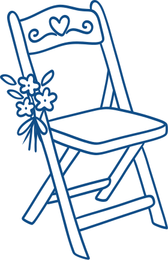
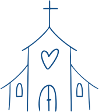
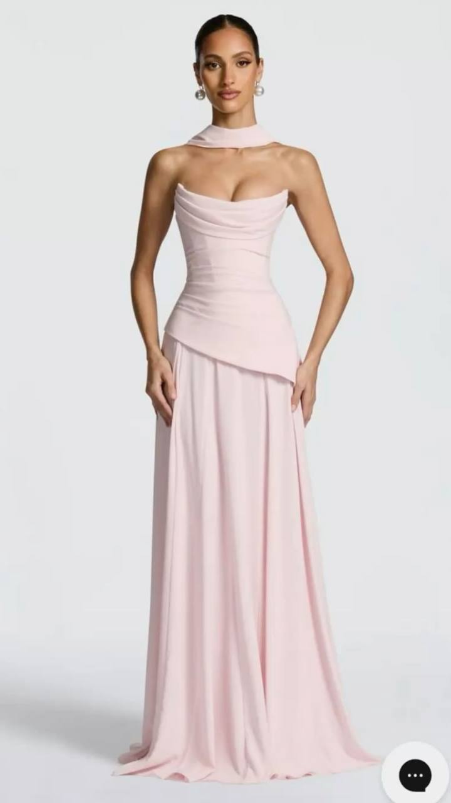
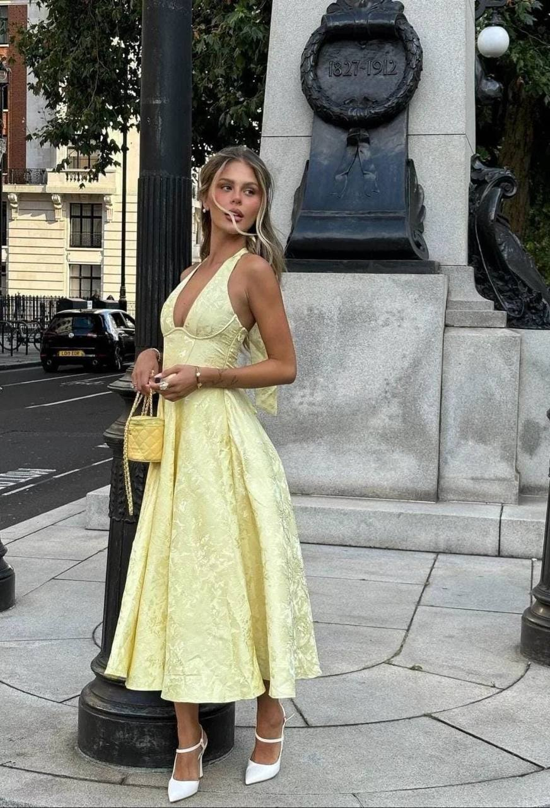
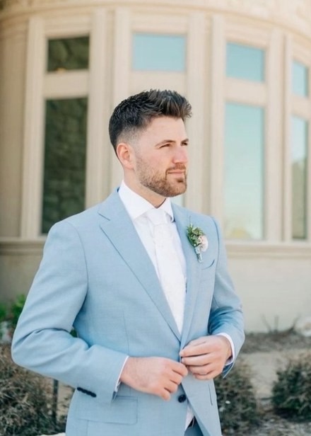
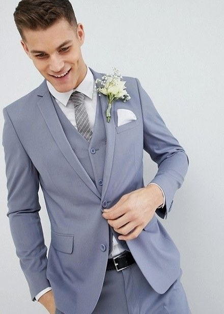
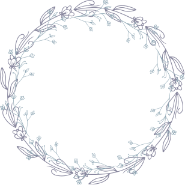

Катерина
и
Максим

Дорогие
Любимые друзья!
приглашаем вас на нашу свадьбу
30
день
02
месяц
2030
год


Место проведения
СПА Отель
г. Сочи, ул. Приморская, 15

Ceremony at the church
Say yes, I do!
Wedding lunch
Cheer for the couple
Evening party
00
:
00
:
00
:
00
Дресс код




Пожелания и детали
Если вы хотите подарить нам ценный и нужный подарок, мы будем очень благодарны за вклад в бюджет нашей молодой семьи.
Просим не дарить букеты, так как мы не успеем насладиться ими в полной мере.
По всем вопросам обращайтесь к нашему организатору
+7922 222 22 22
Анкета Гостя
Чтобы мы знали сколько стульев и бокалов готовить,
заполните анкету заранее
Спасибо! Будем рады видеть вас 💙
Ждем вас на нашей
свадьбе!

К
&
М